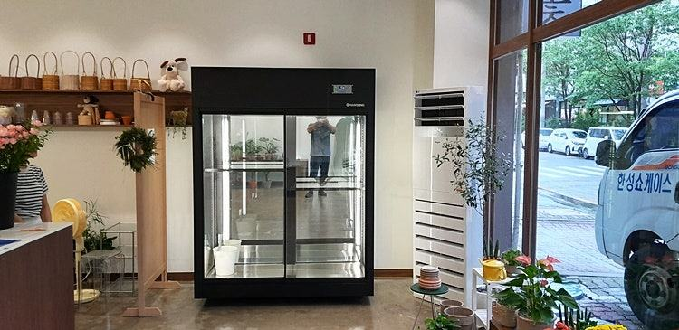
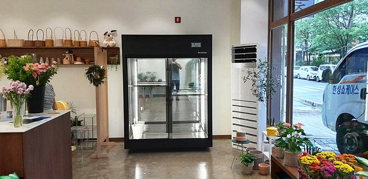

정육쇼케이스
정육쇼케이스 진열, 칸 나누기와 부위별 놓는 순서

정육쇼케이스는 손님이 서는 방향에서 가장 먼저 보이는 칸에 주력 부위를 두고, 소·돼지·양념육처럼 성격이 다른 고기는 칸을 나눠 섞이지 않게 진열하는 것이 기본입니다. 여기에 냉기가 나오는 길을 막지 않을 만큼만 쌓고, 고기 색이 자연스럽게 보이는 조명을 맞추면 진열 상태가 오래 유지됩니다.
안녕하세요. 정육점과 정육식당의 쇼케이스를 부위 구성에 맞춰 설계하는 한성쇼케이스입니다.
같은 고기를 팔아도 어떤 정육점은 쇼케이스 앞에 서기만 해도 사고 싶어지고, 어떤 곳은 고기가 어디에 뭐가 있는지 한참 찾아야 합니다.
차이는 대부분 진열에서 납니다.
정육쇼케이스 진열은 예쁘게 놓는 문제만이 아닙니다. 칸을 어떻게 나누느냐에 따라 냉기가 고르게 닿는지가 달라지고, 그 차이가 오후쯤 고기 색으로 드러납니다.
양념육 국물이 생고기 칸으로 번지는 일도 칸 구성으로 막을 수 있고요.
오늘은 정육쇼케이스 칸을 나누는 방법과 부위별로 놓는 순서, 영업 중에 진열 상태를 지키는 요령을 정리해 드리겠습니다.
1. 칸 나누기는 고기 성격대로
가장 먼저 소고기, 돼지고기, 양념육, 가공육처럼 성격이 다른 고기를 구역으로 나누세요. 생고기와 양념육이 붙어 있으면 양념 국물이 번지고 냄새가 섞입니다.
구역 사이에 칸막이를 두거나 트레이를 따로 쓰면 청소도 쉬워집니다.
구역을 정할 때는 판매량을 함께 봐야 합니다. 많이 나가는 삼겹살과 목살은 넓게, 찾는 사람이 적은 특수 부위는 좁게 잡아 두면 빈 칸이 생기지 않고 보충도 수월합니다.
- 소·돼지·양념육·가공육 구역을 먼저 나누세요.
- 판매량 순으로 구역 폭을 정하세요.
2. 손님 시선 순서대로 놓기
손님은 매장에 들어온 방향에서 가까운 쪽부터 봅니다. 입구 쪽 끝단에는 그날 가장 자신 있는 부위나 행사 상품을, 계산대 쪽 끝단에는 양념육이나 소포장처럼 하나 더 집기 좋은 상품을 두는 흐름이 자연스럽습니다.
높이도 중요합니다. 평대형이라면 앞쪽은 낮게, 뒤쪽은 조금 높게 놓아 뒤 칸 고기까지 한눈에 보이게 하세요.
단차가 있는 쇼케이스라면 마블링이 잘 보이는 소고기를 손님 눈높이 칸에 두면 좋습니다.


3. 냉기 흐름을 막지 않는 진열
많이 보여 주고 싶은 마음에 고기를 높이 쌓으면 위쪽 고기는 냉기가 닿지 않아 색이 먼저 변합니다. 냉기 토출구와 흡입구 앞은 비워 두고, 쌓는 높이는 쇼케이스에 표시된 적재선을 넘지 않게 해 주세요.
한 번에 많이 내놓기보다 하루 판매량을 보고 여러 번 나눠 채우는 편이 색이 오래 갑니다. 보충할 때는 남은 고기를 앞으로, 새 고기를 뒤로 놓는 순서를 지켜 주세요.
마감 때는 진열한 고기를 숙성고나 냉장실로 옮기거나 랩을 씌워 표면이 마르지 않게 해 주세요. 빈 쇼케이스는 그때 트레이를 빼서 핏물과 기름기를 닦아 두면 다음 날 아침 진열을 바로 시작할 수 있고, 냄새가 배는 것도 막을 수 있습니다.
- 적재선과 토출구 앞을 비워 두세요.
- 하루 여러 번 나눠 채우세요.
- 남은 고기는 앞, 새 고기는 뒤로 놓으세요.
4. 조명과 트레이 색
정육쇼케이스 조명은 고기의 붉은 색이 자연스럽게 살아나는 색을 고르는 게 좋습니다. 색이 너무 강하면 손님이 집에 가서 포장을 열었을 때 차이를 느낄 수 있으니 매장 조명과 함께 보고 정하세요.
트레이와 깔개 색도 고기 색에 영향을 줍니다. 진열할 부위 구성과 원하시는 분위기를 알려 주시면 단차, 칸막이, 조명 색까지 함께 맞춰 제작해 드립니다.
체크리스트
- 소·돼지·양념육 구역 분리
- 판매량에 맞춘 구역 폭
- 입구 쪽 주력 부위, 계산대 쪽 소포장
- 적재선과 토출구 앞 비우기
- 선입선출 보충 순서
- 고기 색에 맞는 조명과 트레이
칸마다 온도 차가 컸던 진열장을 바꾼 사례
정육점은 아니지만 칸별 온도가 진열에 얼마나 영향을 주는지 잘 보여 주는 현장입니다. 경기도 파주에서 꽃집과 클래스 공간을 함께 운영하시는 사장님은 처음에 중고 진열장을 쓰셨는데, 칸마다 온도 차가 크고 소음도 커서 수업에 방해가 되고 상품도 금세 상했다고 하셨습니다.
사장님 키에 맞춰 공간을 쓰기 편한 상치형 제품을 제안해 설치한 뒤에는 온도와 습도가 안정되고 맞춤 조명으로 진열 모습도 살아났습니다.
정육쇼케이스도 칸마다 냉기가 고르게 닿아야 어느 칸에 어떤 부위를 두어도 색이 같은 속도로 유지됩니다.



자주 묻는 질문
양념육과 생고기를 한 쇼케이스에 같이 둬도 되나요?
칸을 확실히 나누고 트레이를 따로 쓰면 가능합니다. 양념 국물이 흐르지 않도록 양념육은 깊이가 있는 용기에 담아 주세요.
오후만 되면 고기 색이 어두워지는데 왜 그런가요?
높이 쌓아 냉기가 닿지 않거나, 조명 열이나 손님 손길로 표면이 마른 경우가 많습니다. 적재 높이를 낮추고 나눠 채우는 방식으로 바꿔 보세요.
칸막이나 단차를 우리 매장 부위 구성에 맞춰 만들 수 있나요?
가능합니다. 판매하실 부위와 하루 판매량을 알려 주시면 국내 최초로 상주하는 쇼케이스 전문 디자이너가 칸 구성과 단차를 함께 설계해 드립니다.
매장 조건에 맞춰 만드는 한성쇼케이스
원하시는 제품 사진과 설치할 공간 사진만 보내 주셔도 매장에 맞는 구성을 추천해 드립니다.
- 전국 240여 개 A/S 전담 센터 운영
- 본사 대량 자재 매입으로 품질 대비 합리적인 가격
- 유럽제·삼성 냉각 콤프레셔 적용
- 국내 최초 쇼케이스 전문 디자이너 상주
매장 폭과 원하는 진열 구성을 알려 주세요. 실측과 견적을 안내해 드립니다.
031-986-2458